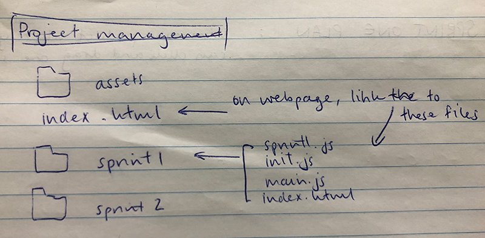
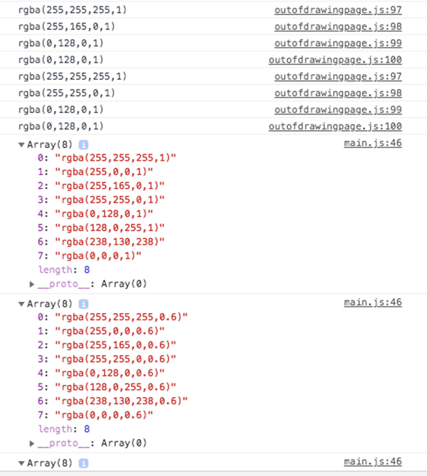

Brief
My aim is to create an interactive web drawing app, targetted at primary school students to aid their learning of Mathematics.
It's interactive and colourful features will add fun into learning Mathematics, as they are able to learn different shapes and their names, number of sides and faces etc. in a hands on and creative way.
These primary ages students will also likely be familiar with web applications such as Google Draw and Photoshop, so they will be able to interact with the features of my program easily.
See below, Google Draw, an web drawing application which I used as inspiration when designing my own.
Overall planning of versions


Project backlog
I used project management tools and techniques to plan the program's development. One example of this is using a project backlog to prioritise stages of work.
Sprint One: Minimum product
My aim in this Version, is to create a minimum product; a program that draws (click and drag) one shape on the canvas.
Plan
Boards
This was part of the Agile based method where I broke down the development process into smaller sprints, planned these through kanban boards and then executed the new feature.
Link to the canvas page
Errors I found through testing:
I tested the program's new functions in the main proram each time. This way I could use information gained from testing to improve the program's functionality.
Final working test of Sprint 1
Reflect
Sprint Two: Drawing Page
Create a drawing page/area on the canvas which will register when the mouse is clicked to draw shapes.
Plan

Boards

Link to the canvas page
Test with errors:
First problem:
Breakdown of iterative process to fix the error, video of the error and fix
This is one example of testing revealing an error, and shows the importance of trialling each new component.
When considering a fix for this problem, I trialled two alternative approaches to fixing the problem, and selected the most suitable one.
I effectively used what I learnt from testing and trialling to improve the functionality of the outcome. I found a solution where objects draw outside of the drawing area (inspite of having the boundary inside parameters).
I decided to use the clip function as my solution.
Second Problem:


Third Problem:
When the mouse is dragged outside of the drawing page, and then also beyond the canvas space, the shape doesn't draw/get placed once they reenter.
Possible solution: as soon as the mouse leaves the canvas, it acts as if mouseUp, and the shape is placed (even if shape appears cut off).
Final working test of Version 2:
Reflect
In this sprint, I began to refine my, develop to test to finalise, planning structure. By the end of the second sprint, I had repeated this developement process a few times, which gave me a much clearer idea of the possibilities of what I can achieve.
This meant that my aims for future sprints were much more refined and realistic - stepping up incrementally and not making too large a jump right away. For example, I decided that Sprint 3 will be exploring Buttons, rather than jumping straight into creating more advanced shapes such as an ellipse. Having a button will give much more freedom during my testing and development, as I can use my mouse without place a rectangle everywhere I click.
Overall it was really beneficial to see my program in a highly simplified form (Sprint 1) as I could build on this potentially shippable product. I decided the logical next step for Sprint Two was to create a drawing page, and I will now be able to use Agile's sprint development process, to incrementally build on the basics I now have.
Sprint Three: Rectangle and Ellipse buttons
Introducing a simple two buttons assigning whether to draw a rectangle or ellipse shape. These buttons are clickable as they are on the canvas but outside of the drawing page.
Plan
Standup
I carried out this project using an Agile based method where I broke the development process into smaller segments called 'Sprints'. I planned each one using Kanban boards, and used the technique of a few 'Standups' to ensure I was tracking along well, and plan out what I learnt from previous sprints, errors that need fixing, and my next steps.
This was an important part of reviewing, and then moving onto my next sprint.
Boards
Link to the canvas page
Test
3.1
Initial test to show basic buttons appearing:
3.2
Test of making an ellipse appear on the drawing page:
3.3
Test to show ellipse + bounding box being drawn instead of the rectangle that was drawn in Version2:
3.4
Pseudo code:
if (Button.shape == "Rectangle"){
var temp = new Rectangle(this.xMouseStart, this.yMouseStart,this.w,this.h,"rgb(10,60,120" )
}
else if (Button.shape == "Ellipse"){
var temp = new Ellipse(this.xMouseStart, this.yMouseStart,this.w,this.h,"rgb(10,60,120" )
}
// add new rectangle to the object list
this.objectSet.push(temp);
}
Button.clicked = ""
Button.shape = ""
Final test showing the program working:
Reflect:
Problem found when testing:
When I tested my program, I found the program crashed if the user tried to click in the drawing page without selecting a button first. It only continuing working if the user selected Rect or Ellipse button and then tried to draw in the page.
This is a major design error, as when a user first goes on a webpage, particularly young kids who are my expected users for this Maths drawing application, they often click around first to familiarise themselves with the page - and I wouldn't want my application to crash in this event.
Solution:
I created this loop around the object set being pushed, so it only gets pushed once there is something to be pushed (eg. when temp exists).
This error made me consider my future step, which is to be able to unselect buttons after you have clicked on them.
Sprint Four: Colour management
Create a colour grid (made up of swatches) on the canvas area (where the buttons are) outside of the drawing page. The user can select a colour from the grid, the state of the swatch is communicated by a stroke change, and then the next shape will be drawn in this colour.
Plan

Stand up 9th June:

Boards
Link to the canvas page
Test
Final test to show swatches working:
Reflect
This is one example of trialling and decision making in the program development. I explored different design options of where to create my swatch class when creating the colour grid. Below explains how I decided which solution was the best option.
By considering different design options, I improved the format of my code, and in this case, how compact the program is by avoiding too many new files.

Problem I found during testing:
To reflect which button has been selected I changed the stroke thickness of the box's outline. However I noticed that the first button selected, doesn't appear as unselected, until the second button is clicked on, and then the mouse is moved.
The mouse having to move before the prior button appearing unselected, was due to where I placed my code to change stroke_outline.
Video to show problem:
Stroke outline in Mouse Move:
Video to show problem solved:
Stroke outline in Update:

This shows a further example of trialling and decision making as I explored different options of where to put my stroke outline width change when clicked on.
I trialled the first option at first, and effectively used the information I learnt from this test, to improve the functionality of my outcome, as by moving the location of this stroke outline condition statement, the previously clicked button can now become unclicked.
Sprint Four PART TWO: Creating a colour grid
Now that I have created and tested two working swatches, I want to form a colour grid of these swatches.
Firstly I ran through my colour array, through console logging.
VIdeo showing working colour grid:
Sprint Five: Polygon
My aim in this Version is to create a button which when selected draws a polygon. The type of polygon is determined by user entry of number of sides.
Plan
As I mentioned in 'Future Steps' under "Simplify?" at the bottom of this plan, I looked into ways to avoid too much repeated code. I was finding at this point, that much of the code for new functions or buttons etc. was repeated from other functions.
This led me to question how this could be mitigated, and I added this to my project backlog.
Boards
Link to the canvas page
Final working test of Sprint 5
Reflect
In the future, I will add a text insert/heading above my sub-buttons to explain what they do. This will help my user to interact with the program more easily.
I also noticed that even before I had selected a sub-button (to select the num of sides the polygon will have), my program allows the user to draw a deafult polygon.
This is definitely better for usability, than if the polygon isn't drawn until you select a sub-button, however I think my communication with the user could be clearer. Through testing I found that
the default polygon that is drawn is a pentagon, and so I made a change so that the sub-button for 5 is shown to be 'selected' (colour scheme, outline width etc.) right from when the application is opened, in order to inform the user what default polygon will be drawn. This might also help their understanding of what the sub-buttons do.
I then made sure I created this same setClicked() function, for any future sets of sub-buttons which had a default choice selected (eg. for star num of points, and for size of brush stroke).
Sprint Six: Star
My aim in this Version is to create a star function to create a star drawing option. Button to create a star on the canvas, with side buttons to determine the number of points of the star.
Plan
Boards
Link to the canvas page
Test
What I learnt about the design process was that building a new feature incrementally is really important.
The first part of testing the star, was to simply create a star class, and create a simple variable in the main to test it appears on the canvas.
Then, firstly I would create a new button for 'star' and test it, then link pushing the new star with when the button was selected.
Finally I could create and test a set of sub-buttons for the number of points it would have, and then link the different shaped stars to this set of sub-buttons.
Reflect
When I was testing this sprint, I found that the drawing page quickly got very full and distracting. This prompted me to consider a clear and/or undo button, which I will address in my next sprint.
This will improve my testing process, as I can test my new shape additions comprehensively without filling up the drawing page as quickly.
Sprint Seven: Clear and Undo
My aim in this Version is to create clear and undo buttons on the canvas; enabling the most recent shape added to be removed, or the whole drawing page to be cleared of shapes.
Plan
Boards
Link to the canvas page
Final working test of Sprint 7
Reflect
As mentioned in my Sprint 7 plan, these new features will speed up my testing process in future versions.
In the future I would hope to create a redo button.
Through testing the undo button, I also started to consider how else I could adapt individual shapes that had already been added to the drawing page.
Something that would be interesting to investigate in future versions is being able to click on an individual shape and change it's colour or number of sides/points.
Sprint Eight: Brush
My aim in this Version is to create a brush feature + button. This allows the user to create a brush stroke line, which follows their mouse movement.
Plan
Boards
Link to the canvas page
Testing
The first part of testing the brush, was to create a dot class, loop these dots to form a stroke when the mouse clicked down, and to test it appears on the canvas.
Then I created three buttons (for 3 different brush stroke widths) and tested that they appeared on the canvas too. I also tested that when they were clicked on, they physically appeared 'selected' by changing colour and stroke width, to inform the user of their state change.
After these two tests I could integrate the two together.
Final working test of Sprint 8
Errors I found through testing:
Reflect
Now this new brush feature has been added, I plan to reorder the layout of my web interface. I will rearrange and resize some of the buttons so it is even more clear to the user what all the buttons do, and how they should interact with the application!
I also plan to adapt the colour scheme so it is more appealing to the eye - although I will keep it colourful as my target users are primary aged kids and I want them to engage with the Maths program as much as possible, to best help their learning.
I will also reflect more on my original purpose for the application and add features to aid Maths learning. One example is printing the names of the different polygons, and number of points on the star, when these shapes appear on the drawing page.
Sprint Nine: Spinning/animated ellipse
My aim in this version is to create an animated ellipse feature and button. This allows the user to create an ellipse that is rotating when placed in the drawing page.
Plan
Boards
Link to the canvas page
Testing
After creating the new Spinning Ellipse function, I called the class in my main file and updated/pushed the new variable. This was to test there were no errors creating a rotating/animated ellipse on the canvas.
Then I created a button to draw a spinning ellipse on the drawing page. I tested this new feature thoroughly, by using the swatch, dragging different sizes, dragging outside of the drawing page boundaries etc.
Reflect
In future versions my interactive web application to aid primary aged students with their understanding of Maths, I could consider adding more interactive features such as this one.
This is because it will draw young children's attention and make the program more fun to interact with.
An example of this is creating functions and buttons for 'Spinning Rectangle', 'Spinning Polygon', Spinning Star' etc.
Ideally I would want to develop a feature which could animate/begin rotating objects after they have been added to the drawing page. Or one singular button which could be clicked after selecting the shape you want, and then it will be an animated version.
Summary
I put all of my code through an online Javascript validator - 'beautifytools.com'. This ensured that my code was formatted properly, caught any final errors, and adhered to all javascript standards.
I reformatted the appearance of my web application to make it more appealing to the eye and intuitive for the user to follow. I designed the canvas area that contains the application (the graphical user interface) simply and minimalist, and I was thoughtful in my placement of buttons, subbuttons etc., to allow the user to intuitively use the application.
I commented all of my code so that the code is easier to follow and for the programmer (or any other experienced programmer) to find specific parts and adapt/improve the web application in the future. I also added general commenting throughout and comments defining the variables within the constructors for my main functions, so that it is obvious what each new function/section of code does. I then removed all console logs except for the ones that show that each file has been called, as they are not needed anymore, and might slow down the speed of my application working.
Finally I carried out some real user scenario testing with my family members, to try to catch any final errors that a user may make. This further improved my confidence that my program is intuative, fun for the user, and will not crash when in use.
User test with my sister of the final program:
This is an example of user scenario testing, as getting a non-programmer to try to use my program, tests unexpected input/user actions. This exposes any problems and other limitations which my previous, expected user behaviour testing might not have revealed.
Final design of my program, with added headings to show the user what the subbuttons do, based on feedback and confusion from user testing. This ensures my final design is very intuitive and user-friendly. I effectively used information from testing and trialling to improve the functionailty of the outcome.The interface was designed so that it was easy to use, and the colour and border width indications were made to make the selected buttons more obvious.
Relevant Implications Summary
Future Proofing
Describe:
This relevant implication considers whether or not it is easy to update and add new features to the program. A well ‘Future Proofed’ program means it is designed so that new features can be added and updated easily.
Address:
The main way I addressed Future Proofing, was by using precise and informative commenting (and commenting which served the purpose of a docstring by defining the function of all the variables in my constructors) to describe the purpose of all my functions and sections of code. This makes it easier for another programmer to quickly be ‘onboarded’ to my project and understand my design decisions.
I also addressed this implication by looping the buttons in my main. This means that a new button can easily be added every time that a new feature/shape is added to the program, with little code changes. I discovered this as I’ve been adding new features throughout the program and building the application incrementally. This ‘sprint’ process and the way I’ve designed the programme addressed ‘Future Proofing’. My program has a modular structure (objects) which allows easy extension of the program, as you can add a new feature by adding a new function (and therefore a new sprint). The function based structure of my program also means that changes and new features can easily be integrated into the main program - as a new function can be tested in a testing file first, then integrated smoothly.
I further addressed this implication, by programming all elements (colours, shapes and buttons) as objects. Each object therefore has code independent of others, and it takes a defined set of parameters to work. Most of these new objects require information about the basic mouse position, whether it’s inside the drawing page boundary, and the swatch colour that has been selected. I addressed Future Proofing as all of these objects have a similar structure and an update function. They are all called by update() and that is how they appear on the web application. The control object page (drawing page) is a central area where all of these objects are managed. Any programmer could receive my web application, and interpret my formatting to build on, remove and add their own new objects following my management process.
Functionality
Describe:
A functional program works well and loads quickly. This relevant implication ensures that the program is free from bugs or glitches and does not crash. The program should also be able to work and appear properly on different browsers and devices, and all the links should work correctly.
Address:
I addressed this implication by programming in mainly javascript. This means that the file size is low, and only consists of one main graphic - allowing my program to run and load quickly. I could observe the ‘load speed’ during my testing of each new sprint. This testing was all carried out through Visual Studio Code’s live web server where I stored my versions.
I addressed this implication through regular testing. I used a systematic sprint system from 'Agile' to ensure my program was flexible and robust. By decomposing the outcome into smaller components and using a function by function build, I could systematically test the program after every sprint (a new sprint for every additional function/feature). I tested each function for each new shape, by pushing as a new variable in the main.js, to ensure it appeared properly on the canvas first. This meant that any new components were tested prior to being integrated into the main program. Then I tested again after integrating into the main program with its corresponding button etc. This ensured that my program was functional and that I found any bugs or potential crashes in a step-by-step iterative building process. Each sprint I also used console logging when an error occured to find the root of the problem, and also to analyze boundary test functions etc.
I further addressed Functionality, by executing ‘user interaction’ tests, by asking family members and friends to test using my program, and asked them for advice around making the user experience more self-explanatory/easy to follow. When carrying out extensive testing of my program’s Functionality myself, I also tested by clicking in multiple positions around the canvas (in and out of the drawing page etc.) and dragging in different directions.
One example of testing helping me to develop the functionality of my program, is when drawing circular shapes such as an ellipse, the shapes often failed. I found this was because these objects were being given negative values for their radius, and so included the Math.abs function to make the radius positive regardless, and avoid any program crashes.
Usability
Describe:
This implication is about ensuring the program is easy to use. Usability is about helping and ensuring the user can recognise, diagnose and recover from errors. Usability ensures the user can not only avoid errors, but that the program can also correct errors without impacting the user. Usability also includes being able to restore to a previous state. This implication ensures the program follows usability heuristics, uses recognised conventions and matches the real world.
Address:
I addressed this implication by creating a simple web interface for my program. I tried to format the canvas page so that interaction was logical for the user eg. buttons having appropriate headings and their size reflecting their purpose (for example sub buttons being square rather than rectangular and located next to the correlated core shape buttons). I addressed the usability heuristic of ‘Visibility of System Status’ by communicating the current state of the program to the user at several points. Buttons physically reflect their change of state (change colour and border width when selected) and have hover colours so the user can clearly see what they are interacting with, and makes the next step, selecting a button, obvious.
I further addressed Usability by creating a draw guide, when the user drags on the drawing page to create a shape. This ensures that my program meets the usability heuristic of ‘Visibility of System Status’ as this guide communicates the size that the shape will be if they place it at that point. I also included ‘Undo’ and ‘Clear’ buttons which helps the user to recover from mistakes, as they can return to their previous place in the program. The ‘Clear’ button returning them to the original and blank state of the drawing page, is a recognised convention and matches the real world idea of ‘clearing’ a canvas/whiteboard etc.
Finally I addressed this implication by uploading updated versions of my files via the terminal, and using Github to manage my files. Github allows the programmer to restore a previous state of their program during the design process. This was a version control tool I used, as through Git I could revert to a previous state in the program's history.
Development Process: Git commits
I uploaded all of my files to Github to store my sprints as I built the program incrementally along the way. After each sprint I carried out regular commits on git, and backing up to the remote repository. This meant that I could use my commit history as evidence of versions.
This allowed me to progressively build up the complexity of the program. Periodically pushing each version of my program to my git-hub account and storing them in the repository that has an associated IP address, was very helpful.
I pushed these up to Github using the terminal. Here is evidence of my git commit history:
Project backlog and potential future additions:

Overall these processes (sprinting, kanban, prioritising, backlogging, planning) made a meaningful contribution to the planning process and final outcome.
My program management methods, version control system and trialling and testing processes highlighted ways which my program worked, but not well, and encouraged me to consider how to improve it's functionality. My final outcome is much better due to these processes, and enabled me to resolve any crashes along the way, more easily.